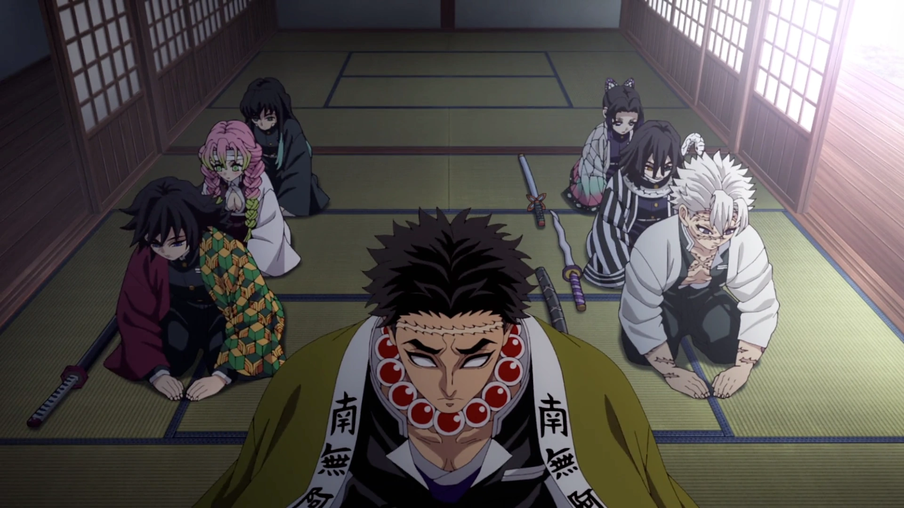

Previously on Demon Slayer (Hashira Training Arc) [WARNING SPOILERS]:

The Hashiras get called into a meeting with Amane Ubuyashiki. They discuss that the leader of the Demon Slayer Corps,
Kagaya Ubuyashiki (also the husband to Amane Ubuyashiki), is nearing the end of his life, where the poison has almost
reached his whole body. Amane and the Hashiras have noted that there has been less sightings of demons recently after
the defeat of two higher up demons, which were slain by Tanjiro Kamado, Nezuko Kamado, Mitsuri Kanroji, Muichiro Tokito,
and Genya Shinazugawa. Amane Ubuyashiki found an old book that notes there is a legacy where a unique person bears a mark
that changes color that allows him to empower himself and those around him, in which Tanjiro carries. Only a select few
can bear this mark, which they have not seen in years. It is also stated that there are people that can and cannot get
the powers that the mark gives. Mitsuri and Muichiro did receive the powers from the mark as well as a temporary mark on
them. While it was not clear as to how one would receive a temporary mark or be worthy of getting it, they all concluded
that it might be correlated with being close to Tanjiro (Physically) and how strong they are. After the meeting, the
Hashiras meet up again and plan their course of action to prepare what will feel like a last battle. The hashiras decided
to create a hashira training arc, where demon slayers would be trained by all the hashiras. But Giyu Tomioka, the water
hashira, felt that he did not need to do this training and help give training, which then there was then conflict between
the hashiras. They tried convincing him to stay and help, but it was no use, and they planned the training sessions
without him.
We then go back to our main character Tanjiro Kamado, who is resting and recovering after the fight he had won
previously. He was eager to get to the training sessions but knew he had to rest first, since training under the
hashiras was not going to be easy. The demon slayers as well as his friends Zenitsu Agatsuma and Inosuke Hashibira
went off to go train. As days went on, Tanjiro was finally able to recover and went off to train before he got a
message from Kagaya, saying to get Giyu to join in the training since he knew Giyu was going to be negative towards
himself and thinking he was not worthy. Tanjiro agreed to help and went off to meet Giyu before he went to train.
After several attempts to convince Giyu, Giyu realized that he was trusted with being the water hashira and went
off to train. Tanjiro then went to train with the hashiras, both those he made relationships within battle and new
ones. The demon slayers were losing motivation after harsh training, but Tanjiro’s spirit ignited the demon slayers,
and they kept on training.
Then we go to Kagaya, who we see is dying and is nearing the end of his life. But then someone shows up unexpectedly.
It was Muzan Kibutsuji, the head leader of the Demons. He had come looking for Nezuko, the demon that conquered the sun,
for demons cannot survive in the sunlight, and Muzan wanted that ability to feel truly invincible. But after having one of
his higher up demons looking for Nezuko, he produced no luck. He then went to the leader of the Demon Slayer Corps, hoping
to lure out her, the hashiras, and Tanjiro. After they get to know their reasons for their actions, Muzan goes to try and
kill Kagaya, when all the sudden the place explodes, with Kagaya and his family. This was Kagaya’s plan, to get help from
a demon named Tamayo that wanted to stop Muzan more than anything. She trapped Muzan with her powers and used an antidote
to turn demons back into humans to hopefully stop Muzan. With Muzan being stuck, Gyomei Himejima, the stone hashira,
attempts to kill Muzan which unfortunately fails. The hashiras have been alerted that their leader was under attack, they
run off to try to save Kagaya, but they see the destruction as well as Muzan trapped, and Gyomei trying to kill him.
They all were enraged to see that their leader was dead and lunged at Muzan. Muzan then smirked and gave the signal to open
the traps that one of the higher up demons had placed, which ended up catching everyone off guard and even those that were
not in the fight. Muzan planned to put trap doors all around where the demon slayers were to send them to his castle, where
all the demons were hiding and were ready to finish the Demon Slayer Crop once and for all.
And that is where Demon Slayer Infinity Castle: The Movie begins…
Picture References:
Contributors to Kimetsu no Yaiba Wiki. (n.d.-b). Hashira Training arc. Kimetsu no Yaiba Wiki. https://kimetsu-no-yaiba.fandom.com/wiki/Hashira_Training_Arc
Posted bymatthasanopinion. (2025, February 21). Demon slayer “hashira training” arc – every episode ranked. Matt Has An Opinion. https://matthasanopinion.com/2025/02/23/demon-slayer-hashira-training-arc-every-episode-ranked